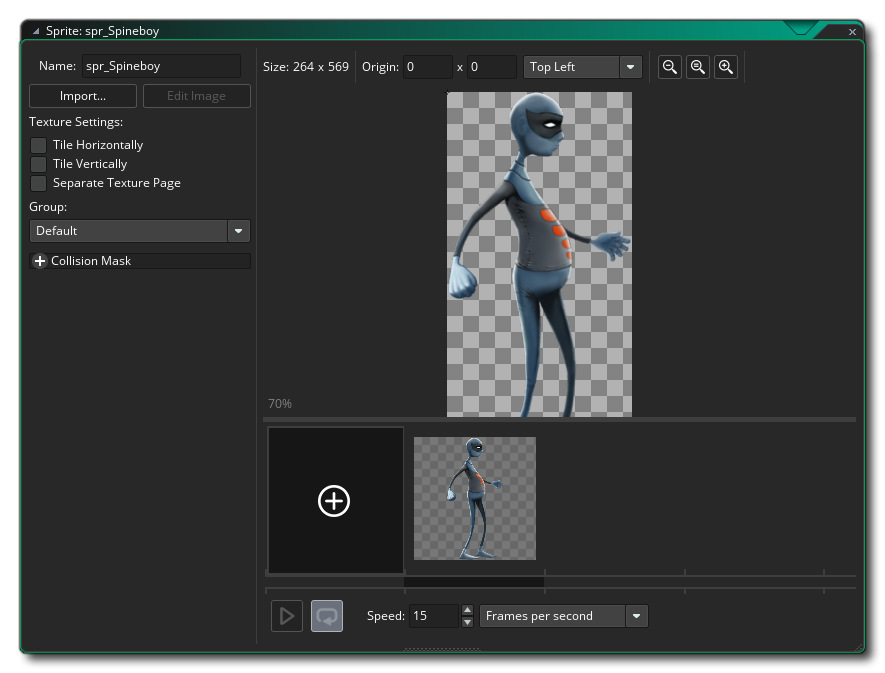

GameMaker Studio 2 unterstützt nicht-Bitmap-Sprites im Forum von Vektor-SWF-Dateien oder Spine Skeletal Animation-Dateien. Beide Formate haben ihre Vor- und Nachteile, und die beiden folgenden Abschnitte erklären, wie sie in den Sprite-Editor importiert werden, sowie einige Informationen darüber, wie sie gerendert werden.
GameMaker Studio 2 bietet eingeschränkte Unterstützung für Vektorsprites. Im Allgemeinen verwenden alle Sprites in GameMaker Bitmaps, die, obwohl sie inhaltlich flexibel sind, sowohl die Größe als auch die Anzahl der möglichen Frames in einem Sprite einschränken, bevor die Speichernutzung prohibitiv werden kann. Vektor-Sprites umgehen diese Einschränkungen, indem sie ihre Inhalte unterschiedlich speichern und zeichnen. Anstelle eines Gitters aus Pixeln, die beim Skalieren blockartig oder unscharf werden können, werden sie als Dreiecke gezeichnet, die skaliert werden können, ohne die Definition zu verlieren, wie im Bild unten dargestellt:
Um Ihnen zu veranschaulichen, wie das gemacht wird, ist das folgende Bild vom selben Vektor Fireman-Sprite, nur dass wir jetzt die Polygone sehen können, mit denen das Bild in GameMaker: Studio:
Nichts ist jedoch jemals kostenlos, wenn es um das Programmieren von Spielen geht, und der Nachteil bei Vektorsprites ist, dass sie teurer zu zeichnen sind als Bitmap-Sprites und diese Geschwindigkeitsdifferenz zunimmt, wenn die Komplexität der importierten Animation zunimmt. Außerdem wird ihre Speichernutzung im Gegensatz zu Bitmap-Sprites von ihrer visuellen Komplexität beeinflusst. In Anbetracht dessen erlauben sie es, große animierte Grafiken auf eine Weise hinzuzufügen, die mit traditionellen Bitmap-Sprites nicht möglich wäre.
Auf der anderen Seite der Performance-Gleichung, da Vektor-Sprites nur die absolut benötigten Pixel zeichnen (im Gegensatz zu Bitmap-Sprites, die auch den leeren Raum um das Bild "zeichnen"), können sie aus GPU-Perspektive günstiger sein. Außerdem sind Vektor-Sprites im Allgemeinen viel kleiner als ihre Bitmap-Entsprechungen - für das obige Feuerwehr-Beispiel sind die Größen der verschiedenen Sprite-Typen wie folgt:
Bitmap at 70x68 = 4x70x68 bytes x 12 frames = 223k
Vector = 54kWenn Sie die Auflösung des Sprites vervierfachen:
Bitmap at 280x272 = 4x280x272 bytes x 12 frames = 3570k
Vector = 54kWie Sie sehen können, kann viel Speicher durch die Verwendung von Vektor-Sprites eingespart werden, und wir haben noch viel Potential für zukünftige Platzeinsparungen.
Gegenwärtig kann GameMaker Studio 2 nur Vektorbilder aus Dateien im SWF-Format importieren, und die Art und Weise, wie sie in das Programm importiert werden, ist fast identisch mit der eines normalen Bitmap-Bildes. Um ein Vektor-Sprite hinzuzufügen, erstellen Sie ein neues Sprite, das den standardmäßigen Load-Sprite-Dialog öffnet, aber stellen Sie sicher, dass Sie *.swf im Dateifilter unten ausgewählt haben.
Wenn Sie auf die Schaltfläche "Laden" klicken, wird das Vektorbild oder die Animation zum Ressourcenbaum hinzugefügt, wobei während der Verarbeitung der Datei ein Fortschrittsbalken angezeigt wird. Beachten Sie, dass dies je nach Komplexität der Datei eine Weile dauern kann (bei komplexeren Animationen bis zu einer Minute). Wenn die Verarbeitung beendet ist, kehren Sie zum Sprite-Eigenschaften-Dialog zurück, der nun wie folgt aussieht:
Wie Sie sehen können, sieht es wie der normale Sprite-Dialog aus, mit dem ersten Bild der Vektordatei, das im rechten Vorschaufenster angezeigt wird. Es gibt jedoch ein paar Änderungen gegenüber einem normalen Sprite-Dialog. Erstens, die Schaltfläche " Sprite bearbeiten" wurde entfernt, da in dieser Art von Sprite keine Bitmaps mehr bearbeitet werden müssen, und zweitens wurde eine neue Schaltfläche " Sprite hinzufügen" hinzugefügt. Diese Schaltfläche öffnet die Vektordatei in der jeweiligen Anwendung. Normalerweise würde dies auf Ihren Webbrowser zutreffen, aber wenn Sie kein Programm mit der Datei verbunden haben, passiert nichts und die Schaltfläche ist deaktiviert (Sie können das Problem lösen, indem Sie den Windows Explorer öffnen und mit der rechten Maustaste auf eine Vektordatei klicken). Verwenden Sie dann " Öffnen mit ", um das Programm auszuwählen, das mit diesen Dateien verknüpft werden soll. Sie können auch einen Viewer für diese Sprites im Bereich Allgemeine Einstellungen - Pfade innerhalb von GameMaker Studio 2 und die Schaltfläche Sprite anzeigen wird anstelle des Standard-Viewers geöffnet.
HINWEIS: Wie das Bild im ausgewählten Vorschau-Editor aussieht, ist nicht dasselbe wie es in Ihrem Spiel aussieht, noch wie es im Vorschaufenster des Sprite-Editors aussieht. Das Vektorbild wird in der Größe importiert, in der es erstellt wurde. Dies entspricht nicht unbedingt der Größe, in der die Vorschau angezeigt wird (Browser skalieren das Bild normalerweise so, dass es zum Beispiel passt).Sie können auch die Qualität des Vektor-Sprites beim Zeichnen festlegen. Dadurch wird die Anzahl der Dreiecke, die zum Generieren des Sprites verwendet werden, einfach reduziert oder erhöht. Der Standardqualitätswert von 50 ist normalerweise für die meisten Spiele ausreichend. Sie sollten jedoch mit diesem Wert experimentieren, wenn Sie extreme Skalierung verwenden oder Leistungsprobleme haben. Von diesem Punkt an sollten die anderen Teile des Editors genauso funktionieren wie für Bitmap-Sprites.
Es gibt eine Reihe von Dingen, die Sie beachten sollten, wenn Sie Vektor-Sprites importieren, wobei das Wichtigste ist, dass einige der Sprite-Zeichnungs- und Sprite-Management-Funktionen aus technischen Gründen nicht unterstützt werden, insbesondere jene Zeichenfunktionen, die nur einen Teil eines Sprites zeichnen oder dass die Position in irgendeiner Weise "verdreht" wird (siehe die einzelnen draw_sprite _ * () Funktionen für genaue Details davon). Die grundlegenden Sprite-Zeichenfunktionen werden jedoch ebenso unterstützt wie die eingebauten Sprite-Variablen. Sie können auch verschiedene Anti-Aliasing- Werte (AA-Werte) für die SWF-Sprites festlegen, die mit den folgenden Funktionen gezeichnet werden: Sprites und Kacheln zeichnen.
Sie sollten auch Folgendes beachten:
- Wenn Sie eine *.SWF-Datei importieren, wird Actionscript nicht unterstützt. Wenn Ihre SWF davon ausgeht, dass sie korrekt funktioniert, wird sie wahrscheinlich nicht richtig funktionieren. Ebenso wird allen eingebetteten Movieclips mit einer eigenen Zeitleiste nur der erste Frame während der gesamten Animation angezeigt - alle Animationen müssen sich auf der Hauptzeitleiste befinden.
- Wenn Ihre Vektordatei besonders feine Details aufweist, können Sie gelegentlich feststellen, dass Löcher oder seltsame Dreiecke in den resultierenden Sprites erscheinen. Dies liegt daran, dass Geometrie bei kleinen Maßstäben manchmal zusammenfallen kann, um Formen zu erzeugen, die nicht gut triangulieren. In diesem Fall haben Sie zwei Möglichkeiten: Sie können den Inhalt der Vektordatei vergrößern, wodurch dem Importeur mehr Platz zum Spielen gegeben wird, oder Sie können versuchen, die Detailgenauigkeit des Objekts, das bricht, zu reduzieren.
- GameMaker Studio 2 verwendet die Bühnengröße der SWF als Grenzen des resultierenden Sprites. Wenn Sie jedoch etwas außerhalb dieser Grenzen auf der Bühne haben, wird es immer noch gezeichnet. Dies bedeutet, dass Sie entweder versuchen sollten, keine Objekte außerhalb Ihrer Bühnengrenzen zu platzieren, wenn Sie nicht möchten, dass sie angezeigt werden, oder eine Maskenebene verwenden, um die Zeichnung auf diesen Bereich zu beschränken.
- Die Bühnengröße beeinflusst auch die Größe der erzeugten Kollisionsmasken. Wenn Sie also eine große Bühnengröße und viele Einzelbilder in Ihrer Animation haben, können Sie möglicherweise viel Speicherplatz verbrauchen. Verwenden Sie daher nur präzise Kollisionsmasken, wenn Sie sie wirklich brauchen.
- Da eine SWF-Datei aus mehreren Layern erstellt wird, von denen einige potenziell überlappen, funktioniert Alpha nicht ganz so wie bei Bitmap-Sprites - überlappende Bereiche sehen nicht so transparent aus wie andere Teile des Sprites, da die Pixel dort sind mehrfach überfahren.
- Bitmap-Füllungen werden jedoch unterstützt, wenn Sie geteilte Bitmap-Füllungen als Teil Ihrer SWF-Datei verwenden, müssen Sie sicherstellen, dass die Bitmap eine Zweierpotenz ist, andernfalls wird sie nicht ordnungsgemäß gekachelt. Das Rendern von Text wird ebenfalls unterstützt, aber Sie müssen die Schriftart in Ihre SWF-Datei einbetten, damit sie im resultierenden Sprite angezeigt wird. Außerdem wird derzeit nur linksbündiger einzeiliger Text unterstützt.
Ein Sprite, der mithilfe einer Skelettanimation erstellt wurde, ist eines, in dem ein Basis- "Skelett" erstellt und animiert wurde, indem Keyframes verwendet wurden, um die Komponenten des Skeletts über die Zeit zu bewegen. Dieses Skelett wird dann von einem Texturatlas gehäutet und die resultierende Animation in einen von vielen Dateitypen exportiert. Gamemaker: Studio erlaubt es Ihnen, diese Art von Sprite zu importieren, solange es als exportiert wurde *.json Formatdatei und hat die korrekt zugeordnete Texturatlasdatei ( *.atlas ) und Bilddatei (als *.png ) im selben Verzeichnis.
WICHTIG: GameMaker Studio 2 unterstützt nur einen Texturatlas pro Sprite.HINWEIS: Diese Funktion unterstützt derzeit nur Dateien, die mit dem Programm Spine erstellt wurden.Derzeit kann GameMaker Studio 2 nur Vektorbilder aus JSON-Formatdateien importieren, die vom Programm Spine erstellt wurden. Die Methode zum Importieren in das Programm ist jedoch fast identisch mit dem Hinzufügen eines normalen Bitmap-Bildes. Um eine Skelettanimation hinzuzufügen, müssen Sie ein neues Sprite erstellen, das den standardmäßigen Load Sprite-Dialog öffnet, aber stellen Sie sicher, dass Sie ausgewählt haben *.json aus dem Dateifilter am unteren Rand.
Wenn Sie auf die Schaltfläche "Laden" klicken, wird die Skeleton-Animation dem Ressourcenbaum als Sprite hinzugefügt, wobei bei der Verarbeitung der Datei ein Fortschrittsbalken angezeigt wird. Beachten Sie, dass dies je nach Komplexität der Datei einen Moment dauern kann. Wenn die Verarbeitung beendet ist, kehren Sie zum Sprite-Eigenschaften-Dialog zurück, der nun wie folgt aussieht: 
Nachdem Sie die Animation importiert haben, können Sie die Kollisionseigenschaften festlegen. Beachten Sie jedoch, dass Sie hier nur auf präzise Kollisionen oder Bounding Box-Kollisionen beschränkt sind und dass die Kollisionsdaten für eine Skelettanimation explizit aus den bereitgestellten Daten stammen. GameMaker Studio 2 generiert keine Kollisionsmaske, wenn die Daten in einer importierten Datei fehlen. Das bedeutet, dass Sie keine Arbeitskollisionen erhalten, wenn die Masken im Programm zum Erstellen des zu importierenden Bildes nicht korrekt eingestellt sind.
HINWEIS: Aufgrund der Komplexität von Skeleton-Animationen ist das im Sprite-Editor angezeigte Vorschaubild nicht dazu gedacht, Ihre Animation genau darzustellen, sondern bietet Ihnen ein einfaches Bild, das die Animation zur Visualisierung im Raumeditor darstellt.Im Gegensatz zu Bitmap-Sprites kann das importierte skelettierte Animations-Sprite nicht im Editor geändert werden. Es gibt jedoch eine Reihe von Funktionen innerhalb der GameMaker Sprache (GML), die zum Ändern von Skins, Festlegen von Eigenschaften und Steuern anderer Aspekte verwendet werden können die Animation.
Es gibt einige Dinge, die Sie beachten sollten, wenn Sie Skeleton-Animations-Sprites importieren, wobei das Wichtigste darin besteht, dass einige der Sprite-Zeichnungs- und Sprite-Verwaltungsfunktionen aus technischen Gründen nicht unterstützt werden, insbesondere jene Zeichenfunktionen, die nur einen Teil von a zeichnen Sprite, oder die die Position in irgendeiner Weise "verdrehen" (siehe die einzelnen draw_sprite _ * () Funktionen für genaue Details davon). Die grundlegenden Sprite-Zeichenfunktionen werden jedoch ebenso unterstützt wie die eingebauten Sprite-Variablen. Neben diesen Funktionen und Variablen können Sie auch Animationseigenschaften mit Hilfe von special festlegen und ändern skeleton_* Funktionen, die im Referenzteil zu Skelettanimationen aufgelistet und erklärt werden.